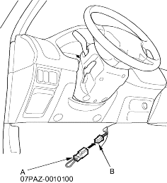
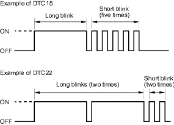

The troubleshooting flowchart procedures assume that the cause of the problem is still present and the ABS indicator is still on. Following the flowchart when the ABS indicator does not come on can result in incorrect diagnosis.
The connector illustrations show the female terminal connectors with a single outline and the male terminal connectors with a double outline.
- Question the customer about the conditions when the problem occurred and try to reproduce the same conditions for troubleshooting. Find out when the ABS indicator came on, such as during ABS control after ABS control, when the vehicle was at a certain speed, etc.
- When the ABS indicator does not come on during the test-drive, but troubleshooting is done based on the DTC, check for loose connectors, poor terminal contact, etc., before you start troubleshooting.
- After troubleshooting, clear the DTC and test-drive the vehicle. Be sure the ABS indicator does not come on.
How to Retrieve ABS DTCs (Except KK, KX, Models)
NOTE: This operation can also be done with the Honda PGM Tester.
- With the ignition switch OFF, connect the SCS short connector (A) to the service check connector (2P) (B) under the driver's side of the dashboard.

- Turn the ignition switch ON (II).
- The blinking frequency indicates the DTC. DTCs are indicated by a series of long and short blinks. One long blink equals 10 short blinks. Add the long and short blinks together to determine the DTC. After determining the DTC, refer to the DTC Troubleshooting Index.
NOTE:
- If the DTC is not memorised, the ABS indicator will go off for 3.6 seconds and then come back on.
- If the ABS indicator continues on, troubleshoot for ''ABS indicator does not go off'' (see step 1 on page 19-78).
The system will not indicate the DTC unless these conditions are met:
- The ignition switch is turned ON (II).
- The SCS circuit is shorted to body ground before the ignition switch is turned ON (II).

- Turn the ignition switch OFF.
- Disconnect the SCS short connector from the service check connector.